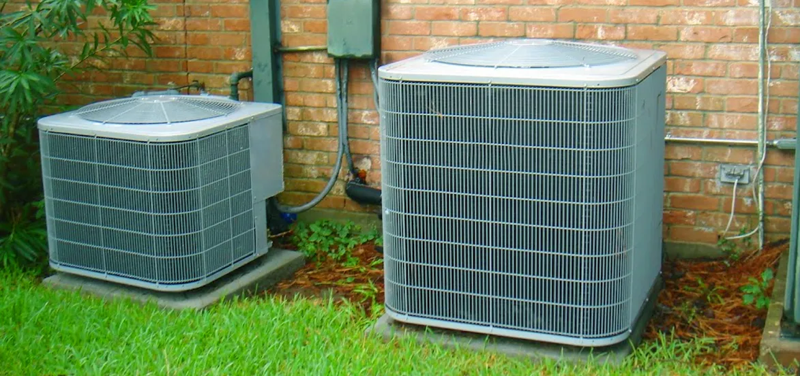

How To Get The Most From Your AC Unit?
Publish Date : 2025-02-18
Views : 1200

During the hotter summer months, any person's air conditioning system in San Diego might account for up to 70% of their overall yearly home energy expenses. The HVAC system consumes the most energy in an individual's home. If a person is like most homeowners, then they are definitely looking for a solution to boost their air conditioner's efficiency while lowering their expenditures. Regrettably, it appears like it is easier said than done. Don't be discouraged. There are a few pointers that might assist a person. Please continue reading to see how one can make their air conditioner work more efficiently and save money over the course of a year. It's a good idea to discover some of the indicators signifying the inefficiency of your AC system before going into the intricacies of enhancing its efficiency.
Signs Indicating That Your System Isn't Running Efficiently.
One might be wondering how to detect whether the efficiency of the AC unit has decreased or not. The following are some indicators showing the system is having trouble:- Increased Costs And Electricity Bills: If one's electricity bills are rising, this is one of the most evident indications of AC inefficiency. When an air conditioner isn't operating efficiently, it consumes more electricity. It's a good idea to get the Air Conditioning repair and cleaning services in San Diego if one observes a significant increase in their consumption and expenditures. The expert will be able to figure out what is causing the rising prices.
- Regular Cycling: The thermostat is considered the "brain" of one's air conditioning system. If a person finds it cycling on and off too frequently, it's possible the thermostat has to be changed. The internal mechanism of the thermostat might be harmed by everyday usage and dust. The compressor might also be causing the system to cycle often. It's advisable to enlist the help of an AC maintenance expert in San Diego to pinpoint the exact problem.
- Clogged Filter Due To Ice Formation On The Compressor: If ice begins to form on one's air conditioner, it's a sure indicator that they will require expert help. If there is a leak in the coolant line, ice might form. Another reason for this issue is if the coils inside one's AC have been damaged. This issue might potentially be caused by a clogged filter. If the unit has ice on it, one can be sure it isn't running as efficiently as it should.
- Unusual Noises: Each device in an individual's house will produce its own distinct sound. One has to probably become accustomed to some of the sounds that occur as a result of their unit's regular operation. If one detects anything out of the ordinary, turn everything off to avoid the problem from becoming worse and schedule a service call for central air conditioner repair. Now that one has identified the indicators of inefficiency, it's time to figure out how to combat them.
Effective Techniques to Increase Air Conditioner Efficiency:
Improving your AC unit's efficiency can help them save money and extend their life. 12 Approaches to Make Your Air Conditioner Run More Efficiently Improving the efficiency of your AC unit can help you save money while also extending its life. 1. Vacuum And Unblock The Vents Of The AC Unit: Keeping the vents clear from trash is one of the most effective methods to improve the performance of one's air conditioner. Take a trip around the house and count the number of vents present there. These will either hang from the ceiling or be placed on the floor. During the evaluation, keep the following in mind:- What size air filter, if any, do the vents require?
- Is there pet hair, dust, or other material in the vents?
- When was the last time you cleaned the vents?
Conclusion:
To summarise, following these guidelines will help one get the most out of any air conditioner. Finally, remember to get their system properly tuned up every year before peak season to ensure that it is in top working order. This will help one avoid any potential problems and enjoy your summer to the utmost in the comfort of their air-conditioned house. You can save money on our utility bills and get the most out of our air conditioners if you go for regular AC maintenance in San Diego. Not to mention avoiding overload on the device will help it live a longer and healthier life.Category